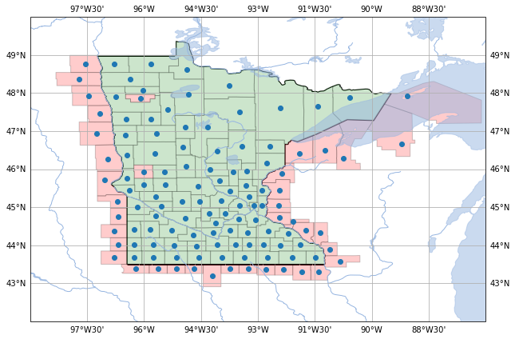
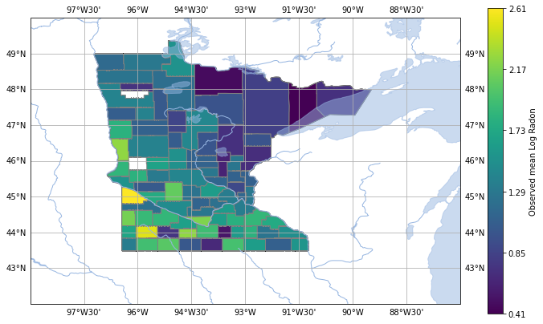
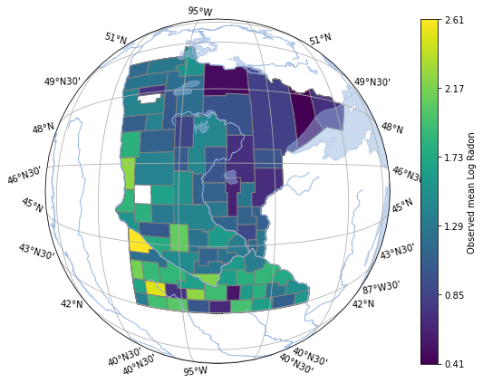
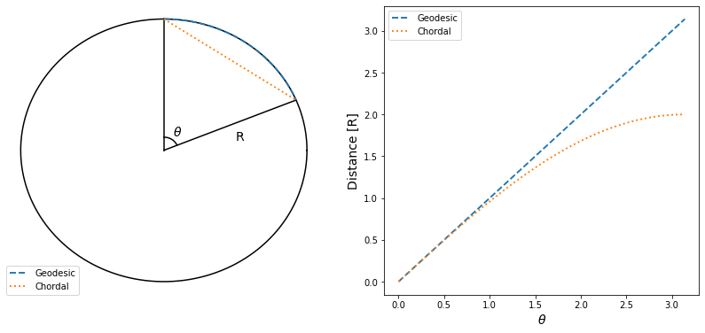
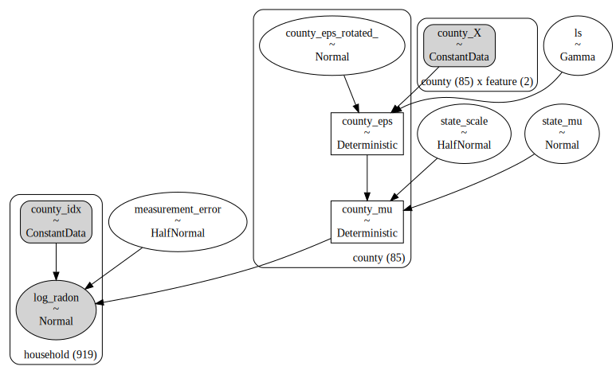
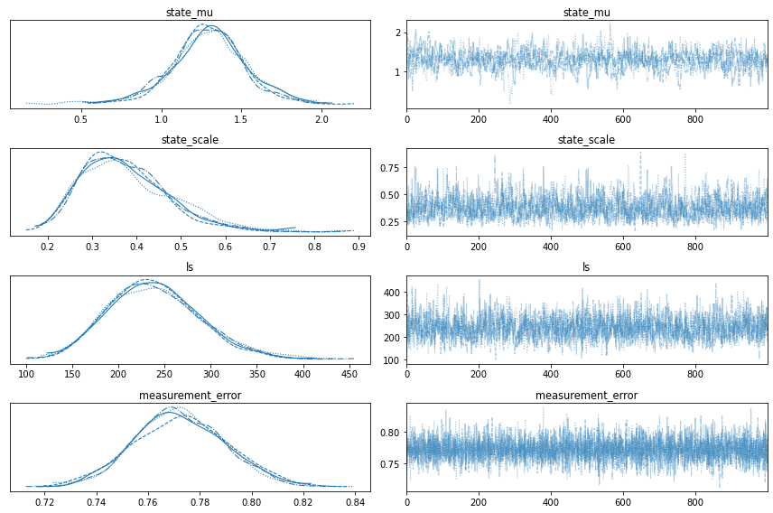
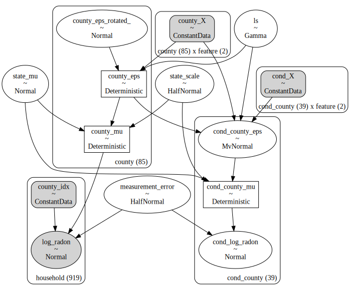
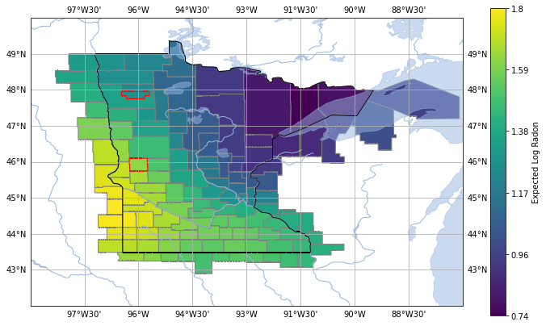
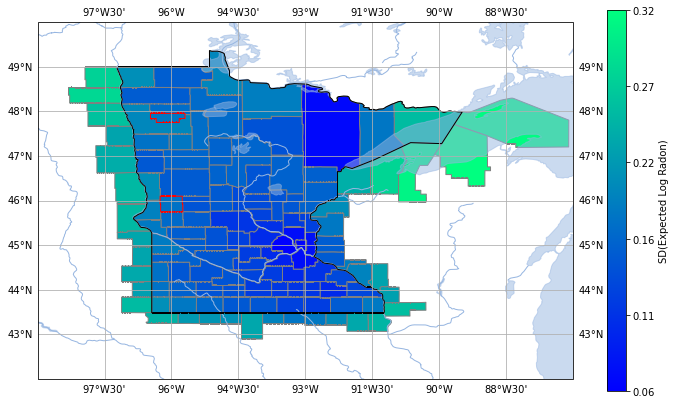

Modeling spatial data with Gaussian processes in PyMC
We build a Gaussian process model on a geospatial dataset with the goal of predicting expected concentrations of a radioactive gas in households depending on the county the houses belong to.

Beyond naive hierarchical models
So many times I've found myself having to work with geospatial data. It's everywhere: from advertisement, to product inventories, to electoral polls. While I was learning Bayesian modeling, I used to think about geographical information as some categorical value that grouped some observations together. The nice thing about this approach is that observations coming from the exact same geographical area will share a common feature, and this feature will be used (somehow) to explain the similarities between both observations. The bad thing about this approach is that observations from neighboring geographical areas are assumed to have absolutely nothing in common. Sounds weird, right? Usually we would picture some kind of continuous latent geographical feature that makes observations taken from nearby places be similar to each other. Surely there must be a better way of modeling geospatial data!
Completely independently from me modeling geospatial data, I learned how to work with Gaussian processes (GPs). GPs provide a very nice and flexible way of setting a prior that essentially says: "nearby observations should be similar to each other, and as the observations go further away, they become uncorrelated". This really clicked with what I wanted to do with geospatial data! The only problem was that there weren't many sources targeting general audiences that explained how to use GPs on geospatial data. That's why I wanted to put together a small example that showcases how you can use GPs with geospatial data using PyMC.
Our dataset
We will be revisiting a classic: the radon dataset, from Gelman and Hill 2006 (if you haven't read the PyMC case study yet, you really should go ahead and do that now, it's an excellent resource!). Just to give you a quick refresher, Gelman and Hill studied a dataset of radon measurements that were performed in 919 households from 85 counties of the state of Minnesota. The case study cited above, focuses on how to use the county information to group households together, and then try to estimate a state-wide expected radon level, and the expected radon for each observed county. This is exactly the same as my old grouping approach to geospatial data!
The grouping approach comes with the crucial drawback I mentioned before: measurements from neighboring counties are uncorrelated from each other. This makes no sense! Why should the radon concentration in Earth's crust follow some county boundary line?! It makes much more sense to imagine that radon concentration varies continuously on the surface of the Earth, and then simply use the household locations to estimate it. This would actually give us the information of the radon we expect to measure in neighboring states or countries! Let's see how we can do this using PyMC!
But first, let's look at some maps
We can't start our modeling without first looking at our data on a map. So we'll do a small detour on how I used cartopy to plot the radon dataset.
import arviz as az import cartopy import cartopy.crs as ccrs import cartopy.feature as cfeature import cartopy.io.shapereader as shpreader import numpy as np import pandas as pd import pymc as pm from aesara import tensor as at from matplotlib import pyplot as plt
Cartopy can be used to get shape files from some public sources, like Natural Earth. One of these are the shape files for counties in the United States. The county shapes have a lot of meta information. One important field is called FIPS, that stands for Federal Information Processing System. At the time the radon measurements were performed, the counties were identified using their FIPS codes, and we will use these to align our observations to the corresponding shape files.
# Load the radon dataset and add the US FIPS prefix df = pd.read_csv(pm.get_data("radon.csv"), index_col=0, dtype={"fips": int}) df["fips"] = "US" + df["fips"].astype("string") county_idx, counties = df.county.factorize(sort=True) unique_fips = df.fips.unique()
# Get the state of Minnesota shapefile reader = shpreader.Reader( shpreader.natural_earth( resolution="10m", category="cultural", name="admin_1_states_provinces" ) ) minnesota = [ s for s in reader.records() if s.attributes["admin"] == "United States of America" and s.attributes["name"] == "Minnesota" ][0]
# Get Minnesota counties and neighboring counties shape files reader = shpreader.Reader( shpreader.natural_earth( resolution="10m", category="cultural", name="admin_2_counties" ) ) minnesota_counties = [ county for county in reader.records() if county.geometry.intersects(minnesota.geometry) and county.geometry.difference(minnesota.geometry).area / county.geometry.area < 0.01 ] minnesota_neighbor_counties = [ county for county in reader.records() if county.geometry.intersects(minnesota.geometry) and county.geometry.difference(minnesota.geometry).area / county.geometry.area > 0.5 ] counties_with_measurements = [ c for c in minnesota_counties if c.attributes["FIPS"] in unique_fips ] counties_without_measurements = [ c for c in minnesota_counties if c.attributes["FIPS"] not in unique_fips ] len(counties_with_measurements), len(counties_without_measurements), len( minnesota_neighbor_counties )
(85, 2, 37)
Now that we have loaded the dataset and extracted all the necessary shape files, we notice something interesting. The dataset has measurements for 85 out of 87 counties from Minnesota. We will use our model to predict the expected level of radon that we should see in the remaining 2 counties and also on the 37 neighboring counties from the neighboring states. Let's have a look at where these counties are on a map:

The green counties are the ones where we have at least one household measurement. The red ones are where we don't have measurements. The blue dots are points that are within the county. Since the radon dataset doesn't have the precise coordinates of each household (I imagine for privacy reasons), we will use the coordinates of the blue dots to impute the county households locations.
Now let's look at the average radon measurement for each county. To view this, we first need to use a dictionary that maps from the county measured in the radon dataframe to the shapefile record for said county.
# Get a mapping from county names to latitude/longitude # and another mapping from county names to shapefile records for plotting county_fips = {counties[idx]: df.fips.iloc[i] for i, idx in enumerate(county_idx)} fips_to_records = { record.attributes["FIPS"]: record for record in counties_with_measurements } county_to_records = {c: fips_to_records[county_fips[c]] for c in counties} county_lonlat = { c: np.array( [ county_to_records[c].attributes["longitude"], county_to_records[c].attributes["latitude"], ] ) for c in counties } cond_counties = [ c.attributes["NAME"].upper() for c in counties_without_measurements ] + [ f"{c.attributes['NAME']} - {c.attributes['REGION']}".upper() for c in minnesota_neighbor_counties ] county_to_records.update( { name: record for name, record in zip( cond_counties, counties_without_measurements + minnesota_neighbor_counties ) } ) cond_county_lonlat = { c: np.array( [ county_to_records[c].attributes["longitude"], county_to_records[c].attributes["latitude"], ] ) for c in cond_counties }
fig = plt.figure(figsize=(12, 7)) projection = ccrs.PlateCarree() ax = plt.axes(projection=projection) ax.add_feature( cfeature.ShapelyFeature([minnesota.geometry], projection), edgecolor="k", facecolor="w", ) expected_radon = df.groupby("county")["log_radon"].mean() vmin = expected_radon.min() vmax = expected_radon.max() color_getter = lambda x: plt.get_cmap("viridis")(np.interp(x, [vmin, vmax], [0, 1])) for county in counties: county_record = county_to_records[county] val = expected_radon[county] ax.add_feature( cfeature.ShapelyFeature([county_record.geometry], projection), edgecolor="gray", facecolor=color_getter(val.data), ) cbar = fig.colorbar(plt.matplotlib.cm.ScalarMappable(norm=None, cmap="viridis")) cbar.set_ticks(np.linspace(0, 1, 6)) cbar.set_ticklabels( [f"{round(np.interp(x, [0, 1], [vmin, vmax]), 2)}" for x in cbar.get_ticks()] ) cbar.set_label("Observed mean Log Radon") ax.add_feature(cfeature.LAKES, alpha=0.5) ax.add_feature(cfeature.RIVERS) ax.set_xlim([-99, -87]) ax.set_ylim([42, 50]) ax.gridlines(draw_labels=True, dms=True, x_inline=False, y_inline=False);

We can see a small pattern forming here. It looks like radon is denser to the south west, and sparser in the north east. We're almost ready to take this data to the next level!
Gaussian processes on a sphere
Even though the above plot seems flat, Earth is round (kind of):

And this makes it a bit harder for us to define Gaussian processes. Thankfully, there is a very nice review paper by Jeong, Jun and Genton that talks exactly about how one could write down covariance functions for Gaussian process that occur on the surface of a sphere. We will basically follow one of their simplest approaches: use a Matérn kernel that relies on the chordal distance between points.
Wait, the what distance?!
The chordal distance simply is the distance between two points on the surface of the Earth if you could travel between them using a straight line that went through the planet. On the other hand, the Geodesic distance is the shortest distance between two points if one was forced to travel on the surface of the globe.

Custom PyMC covariance kernel on a sphere
PyMC comes with many covariance kernels, but they all assume that the distance between two points is the Euclidean distance. Since we will be working with longitude and latitude pairs, we will need to write a custom Covariance subclass that operates using the metric we actually want - the chordal distance between points on a sphere.
To do this, we basically need to inherit from pymc.gp.cov.Stationary and overload the full method. This method computes the covariance between a set of points. To do this, we will copy the implementation from pymc.gp.cov.Matern32 but change the distance function used. Instead of using the assumed euclidean_dist, we will write a custom method, the chordal_dist. To compute the chordal distance, we only need to convert the longitude/latitude coordinates into their 3-D position counterparts. The chordal distance then simply is the Euclidean distance between the 3-D position coordinates.
class Matern32Chordal(pm.gp.cov.Stationary): def __init__(self, input_dims, ls, r=6378.137, active_dims=None): if input_dims != 2: raise ValueError("Chordal distance is only defined on 2 dimensions") super().__init__(input_dims, ls=ls, active_dims=active_dims) self.r = r def lonlat2xyz(self, lonlat): lonlat = np.deg2rad(lonlat) return self.r * at.stack( [ at.cos(lonlat[..., 0]) * at.cos(lonlat[..., 1]), at.sin(lonlat[..., 0]) * at.cos(lonlat[..., 1]), at.sin(lonlat[..., 1]), ], axis=-1, ) def chordal_dist(self, X, Xs=None): if Xs is None: Xs = X X, Xs = at.broadcast_arrays( self.lonlat2xyz(X[..., :, None, :]), self.lonlat2xyz(Xs[..., None, :, :]) ) return at.sqrt(at.sum(((X - Xs) / self.ls) ** 2, axis=-1) + 1e-12) def full(self, X, Xs=None): X, Xs = self._slice(X, Xs) r = self.chordal_dist(X, Xs) return (1.0 + np.sqrt(3.0) * r) * at.exp(-np.sqrt(3.0) * r)
Gaussian process geospatial model
It's been a long road up until now, but we are finally ready to write our PyMC model of the geospatial dataset! Let's go step by step, and start by simply creating the model instance and populating it with some data.
X = np.array(list(county_lonlat.values())) with pm.Model( coords={ "county": counties, "household": df.index, "feature": ["longitude", "latitude"], } ) as m: _county_idx = pm.ConstantData("county_idx", county_idx, dims="household") _X = pm.ConstantData("county_X", X, dims=("county", "feature"))
Now, we will basically assume that the observed radon comes from a state level mean plus some deviation due to the county. The county deviation will be represented by a GP. Let's first create the state level random variables.
with m: state_mu = pm.Normal("state_mu", 0, 3) state_scale = pm.HalfNormal("state_scale", 0.7)
We create the GP prior for the county deviations. We will try to infer the length scale and a priori assume that it's around 200 km with a standard deviation of about 50 km.
with m: ls = pm.Gamma("ls", mu=200, sigma=50) latent = pm.gp.Latent(cov_func=Matern32Chordal(2, ls),) county_eps = latent.prior("county_eps", _X, dims="county", jitter=1e-7)
We piece everything together and compute the expected radon measurement of each household:
with m: county_mu = pm.Deterministic( "county_mu", state_mu + state_scale * county_eps, dims="county" ) household_mu = county_mu[_county_idx]
Now, the final piece of the puzzle: the observational distribution. We will model the log radon values
with m: measurement_error = pm.HalfNormal("measurement_error", 0.5) observed = pm.Normal( "log_radon", mu=household_mu, sigma=measurement_error, observed=df.log_radon.values, dims="household", ) pm.model_to_graphviz(m)

If you are familiar with the radon dataset you will have noted that we haven't included any information about whether the radon was recorded at the basement or not. We could exploit this extra information to make the model better. We decided to go with the simplest geospatial model posible to begin with, but if you want more, just ping us on Twitter @pymc_labs, and we'll write up a follow up blog post on how you could add this extra piece of information to the model.
Now let's sample from the model and see what the model learns about the measured counties:
with m: idata = pm.sample( init="jitter+adapt_diag_grad", random_seed=42, chains=4, target_accept=0.9 )
Auto-assigning NUTS sampler...
Initializing NUTS using jitter+adapt_diag_grad...
Multiprocess sampling (4 chains in 2 jobs)
NUTS: [state_mu, state_scale, ls, county_eps_rotated_, measurement_error]
Sampling 4 chains for 1_000 tune and 1_000 draw iterations (4_000 + 4_000 draws total) took 332 seconds.
axs = az.plot_trace(idata, var_names=["~county_mu", "~county_eps"], filter_vars="like") axs[0,0].figure.tight_layout();

Finally, the most important piece, extrapolating what we learned to unobserved counties! To do this, we will have to create conditional GP's on the unobserved coordinates, and then create the conditional observed log radon random variables:
cond_X = np.array(list(cond_county_lonlat.values())) with m: m.add_coords({"cond_county": cond_counties}) _cond_X = pm.ConstantData("cond_X", cond_X, dims=["cond_county", "feature"]) cond_county_eps = latent.conditional( "cond_county_eps", _cond_X, jitter=1e-3, dims="cond_county" ) cond_mu = pm.Deterministic( "cond_county_mu", state_mu + state_scale * cond_county_eps, dims="cond_county" ) observed = pm.Normal( "cond_log_radon", mu=cond_mu, sigma=measurement_error, dims=["cond_county"], ) pm.model_to_graphviz(m)

Afterwards, predicting on these new counties is as easy as sampling from the posterior predictive distribution.
with m: pp = pm.sample_posterior_predictive( idata, var_names=["cond_county_mu", "cond_log_radon"], random_seed=42 )
fig = plt.figure(figsize=(12, 7)) projection = ccrs.PlateCarree() ax = plt.axes(projection=projection) expected_radon = idata.posterior.county_mu.mean(["chain", "draw"]) pp_expected_radon = pp.posterior_predictive.cond_county_mu.mean(["chain", "draw"]) vmin = min([expected_radon.min().data, pp_expected_radon.min().data]) vmax = max([expected_radon.max().data, pp_expected_radon.max().data]) color_getter = lambda x: plt.get_cmap("viridis")(np.interp(x, [vmin, vmax], [0, 1])) for county in counties: county_record = county_to_records[county] val = expected_radon.sel(county=county) ax.add_feature( cfeature.ShapelyFeature([county_record.geometry], projection), edgecolor="gray", facecolor=color_getter(val.data), ) for county in cond_counties: county_record = county_to_records[county] if county_record in counties_without_measurements: edgecolor = "red" else: edgecolor = "gray" val = pp_expected_radon.sel(cond_county=county) ax.add_feature( cfeature.ShapelyFeature([county_record.geometry], projection), edgecolor=edgecolor, facecolor=color_getter(val.data), ) cbar = fig.colorbar(plt.matplotlib.cm.ScalarMappable(norm=None, cmap="viridis")) cbar.set_ticks(np.linspace(0, 1, 6)) cbar.set_ticklabels( [f"{round(np.interp(x, [0, 1], [vmin, vmax]), 2)}" for x in cbar.get_ticks()] ) cbar.set_label("Expected Log Radon") ax.add_feature(cfeature.LAKES, alpha=0.5) ax.add_feature(cfeature.RIVERS) ax.set_xlim([-99, -87]) ax.set_ylim([42, 50]) ax.add_feature( cfeature.ShapelyFeature([minnesota.geometry], projection), edgecolor="k", facecolor=(1, 1, 1, 0), ) ax.gridlines(draw_labels=True, dms=True, x_inline=False, y_inline=False);

Beautiful! Our model learned the north-east south-west pattern of radon from the observations! I also takes advantage of the discovered pattern to make predictions of the expected radon in the neighboring counties, and in the two counties without measurements in Minnesota.
And, of course, we can also visualize the uncertainty we have on our predicted expected log radon measurements by plotting the standard deviation of the posterior predictive distribution:

The model is quite certain in its prediction for the Minnesota counties, and the standard deviation of expected radon is small. But as the model is forced to make predictions outside of Minnesota, the standard deviation increases, meaning that the model is less certain about its mean predicted value. We can also see that the model is fairly certain about the predicted value for the two Minnesota counties without measurements, which makes sense, given that we have a bunch of recordings all around them.
Wrap up
That was quite a ride! We managed to build a Gaussian process prior for the radon dataset, which allowed us to learn a geospatial pattern of expected radon concentration, and to predict measurement concentrations in neighboring, unmeasured counties. To compare this against the grouping approach, which is sometimes called a hierarchical model, we are able to see a more informed extrapolation from observed counties to unobserved counties. The grouping approach, at its core, assumes that a priori all groups are exchangeable. In other words, a naive hierarchical model would only be able to predict that counties to the east and west of Minnesota would have exactly the same expected radon concentration.
As we mentioned earlier in this post, this model doesn't exploit part of the information present in the dataset. It can be improved to leverage whether a recording was taken in a basement or not, and it could also exploit the measured Uranium similarly to how it's shown in the group level predictors example using the naive hierarchical model. If you're interested in reading a future blog post that shows this, feel free to reach out on twitter.
Acknowledgements
Cover photo by Greg Rosenke on Unsplash
References
- Gelman, A., & Hill, J. (2006). Data Analysis Using Regression and Multilevel/Hierarchical Models (Analytical Methods for Social Research). Cambridge: Cambridge University Press. doi:10.1017/CBO9780511790942
- PyMC radon dataset Case study
- Jaehong Jeong. Mikyoung Jun. Marc G. Genton. "Spherical Process Models for Global Spatial Statistics." Statist. Sci. 32 (4) 501 - 513, November 2017. https://doi.org/10.1214/17-STS620
- Radon dataset from Gelman & Hill (2006). We only consider the recordings performed in Minnesota (MN) that go from row 5081 to 5999. A file with the relevant subset is available in the pymc-examples repository
Work with PyMC Labs
If you are interested in seeing what we at PyMC Labs can do for you, then please email info@pymc-labs.io. We work with companies at a variety of scales and with varying levels of existing modeling capacity. We also run corporate workshop training events and can provide sessions ranging from introduction to Bayes to more advanced topics.